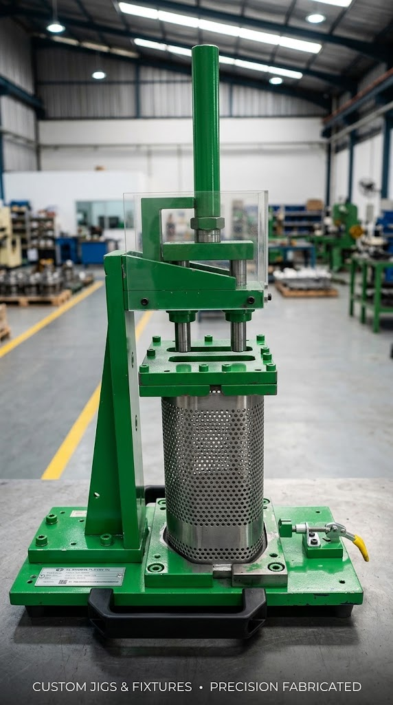

Layanan Permesinan Presisi & Tooling
Solusi manufaktur terintegrasi didukung mesin CNC modern, tenaga operator ahli, dan kontrol mutu ketat di workshop Cikarang Pusat.

Fasilitas & Layanan CNC Milling 3-Axis (Hision & GUT)
Dua unit mesin CNC Milling 3-Axis berkecepatan tinggi dengan kapasitas meja kerja hingga 1.000 × 500 mm untuk pembuatan cetakan dan part presisi.

Fasilitas & Layanan CNC Bubut Turning (Hision)
Satu unit CNC Bubut Hision presisi tinggi untuk pembentukan komponen silindris, ulir bertingkat, dan kontur radial berkecepatan tinggi.

Fasilitas & Layanan Milling Manual Konvensional
Mesin milling vertikal konvensional untuk pekerjaan penyiapan material cepat, alur pasak (keyway), lubang tap, dan perbaikan part darurat.

Layanan Stamping Dies & Mold Presisi
Desain, fabrikasi pemesinan CNC, perakitan, dan pengujian trial stamping dies serta mold cavity presisi tinggi untuk sektor manufaktur komponen otomotif dan elektronik.

Layanan Rancang Bangun Jig & Checking Fixture Presisi
Fabrikasi alat bantu inspeksi kualitas (Quality Control Checking Fixture), Go/No-Go Gauge, serta Fixture Perakitan dan Pengelasan dengan akurasi mikron tinggi.

Layanan Fabrikasi Rangka, Meja Assembly & Trolley Industri
Pengelasan presisi MIG/TIG, pemotongan, perakitan struktur baja profil, dan pembuatan sarana material handling custom untuk area produksi pabrik.
Alur Kerja Pengerjaan di PT. Nurcahya Teknik Industry
Pemeriksaan gambar kerja 2D/3D (STEP/DWG/PDF), telaah toleransi kritis, dan penerbitan penawaran harga resmi 1×24 jam.
Simulasi lintasan pahat bebas tabrakan dan eksekusi permesinan pada mesin CNC Hision dan GUT dengan cairan pendingin aktif.
Verifikasi dimensi aktual menggunakan micrometer dan dial indicator terkalibrasi serta penerbitan lembar laporan inspeksi fisik.
Pengemasan anti-benturan dan pengiriman tepat waktu langsung ke lokasi pabrik pelanggan di Cikarang, Karawang, dan Jabodetabek.
Siap Mendukung Kebutuhan Manufaktur Pabrik Anda
Diskusikan kebutuhan permesinan CNC, perakitan dies, checking fixture, atau struktur fabrikasi Anda langsung dengan PIC engineering kami.